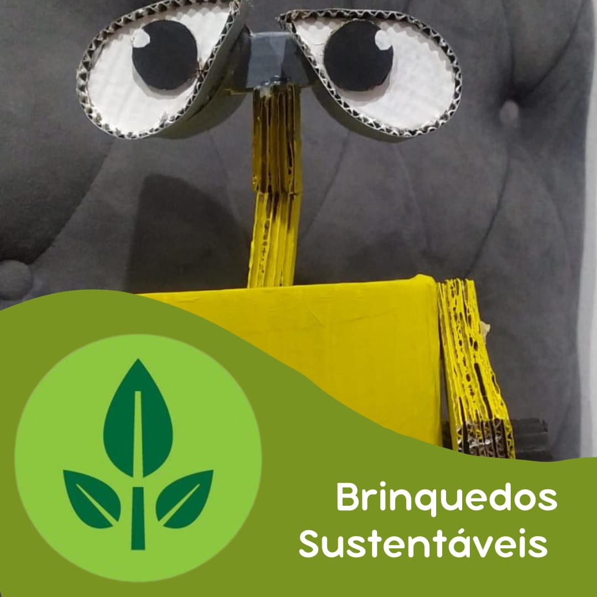

jogo de matemática sustentável ajuda na memória e na educação
produtos sustentáveis Um jogo sustentável é de extrema importância para as crianças, pois desempenha um papel educativo e engajador no desenvolvimento de sua consciência ambiental. Nosso objetivo é criar jogos sustentáveis que estimulam a criatividade e a educação das crianças.
O Wall-E é considerado um símbolo de sustentabilidade porque o filme retrata um futuro distópico no qual a Terra está coberta por lixo e resíduos, tornando-a inabitável. Wall-E, o protagonista, é um robô compactador de lixo deixado para limpar o planeta.
A história destaca os impactos negativos do consumo excessivo, da poluição e da falta de responsabilidade ambiental. Ao mostrar as consequências desse comportamento, o filme promove a conscientização sobre a importância da sustentabilidade e da preservação do meio ambiente
